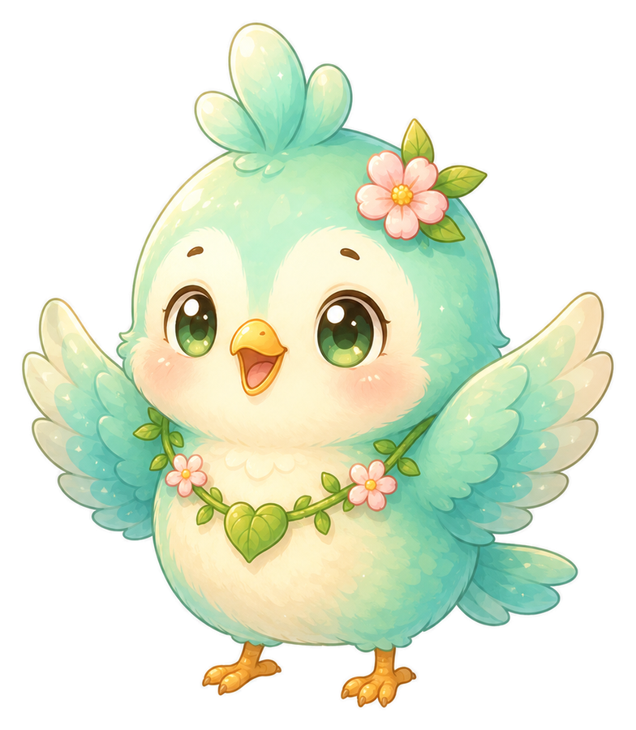
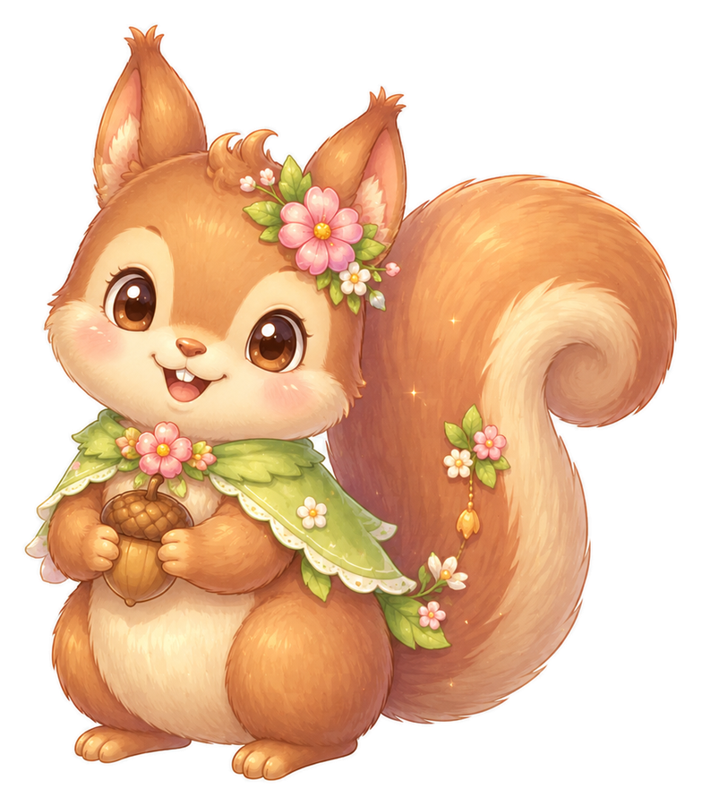

내 숲에 심을 첫 나무 이름을 적어요.
살아있는 숲 V1.73.3 hotfix · 내 자리 수정
살아있는 숲
사람들이 남긴 나무가 모여 숲이 되는 곳.
V1.73.3 hotfix · 내 자리 수정
내 숲을 시작해볼래?
나무 이름을 짓고 오늘 기분만 고르면 돼요.
좋음·보통·피곤 중 지금과 가까운 걸 골라요.
오늘의 기록이 숲에 작은 흔적으로 남아요.
낮 숲
•
내 자리
내 자리는 아직 씨앗을 기다리고 있어요.
이름 없는 나무
오늘 기록 전오늘의 마음을 남기면 내 나무가 큰 숲 안에 자리 잡아요.
초반에는 더미 나무가 숲을 채우고, 실제 친구가 오면 가까운 자리가 친구 나무로 바뀌어요.
나무들이 조금 겹쳐 보여도, 모여 있을수록 진짜 숲처럼 보여요.
🌸 꽃길 자리
☀️ 햇살 자리
💧 연못 자리
🎀 그네 자리
🌷 꽃담 자리
월드 숲의 내 자리
월드 숲은 첫 흔적을 기다려요
첫 마음을 기록하면 내 나무 자리에도 작은 씨앗빛이 남고, 함께 만드는 숲의 시작이 열려요.
친구 숲의 움직임
아직 친구가 없어도 숲은 기다리는 중
리본새싹, 별꽃잎, 소풍바람 같은 숲 친구가 먼저 빈자리를 지켜줘서 처음 시작해도 외롭지 않게 보여요.
친구 관계 저장소
친구 목록과 숲 자리를 분리해서 관리해요
친구 목록에 있는 친구를 꽃길/햇살/연못/그네/꽃담 자리로 직접 배치하거나 이동할 수 있어요.
친구 초대 준비
친구에게 보낼 숲 초대장을 만들 수 있어요
내 나무 이름과 오늘의 숲 문장을 담아 친구에게 보낼 짧은 초대 문구를 준비했어요.
선택된 자리: 꽃길 자리 · 친구 자리 A
초대 문구를 미리 보려면 버튼을 눌러주세요.
초대 링크는 자리 선택 후 여기에도 표시돼요.
월드 숲 자리 안내
빈자리는 이제 실제 온라인 친구가 들어올 수 있는 고정 자리예요.
꽃길, 햇살, 연못, 그네, 꽃담 자리 중 하나를 골라 친구에게 초대 문구를 보낼 수 있어요.
지금 해야 할 일
복잡한 설명보다, 첫 기록부터 시작해요.
내 나무 이름을 정하고 오늘의 마음 하나만 고르면 충분해요. 나머지 기능은 숲이 자라면서 천천히 열어볼 수 있어요.
오늘의 흐름
내 나무를 심을 준비
숲을 둘러보고, 내 나무와 친구들이 함께 채울 자리를 시작해요.
오늘 내 나무 돌보기 · V1.73.0 reset test
밤 숲속 자리
하루 한 번, 내 숲이 조금 자라요.
나무 이름을 적고, 오늘의 마음을 하나 골라주세요.
처음 온 사람도 길을 잃지 않도록 오늘은 이 두 가지만 먼저 하면 돼요.
① 나무 이름
② 마음 선택
③ 변화 확인
내 정원 메뉴
기록, 꾸미기, 나눔만 가볍게 열어요.
이름 없는 나무




내 정원에 어울리는 소리를 켜보세요
바람, 물방울, 밤벌레 중 하나를 누르면 이 기기에서만 짧은 숲 분위기가 재생돼요.
나무 이름 짓기
처음 심을 나무 이름을 정해줘요.
오늘 기분은?
아직 오늘의 상태를 기록하지 않았어요.
내일의 나에게 한마디
내일 다시 왔을 때 먼저 보여줄게요.
최근 숲 기록
오늘 기록 전에는 이전 숲 문장을 보고, 기록 후에는 오늘의 숲 문장이 남아요.
아직 쌓인 숲 기록이 없어요.
첫 기록 전
오늘 기록 후 내 나무를 돌볼 수 있어요
마음을 기록한 뒤, 내 나무에게 하루 한 번 작은 돌봄을 남겨요.
오늘 기록 후 숲길 하나를 걸을 수 있어요
감정 기록을 마친 뒤, 내 숲에서 오늘 어울리는 길을 하나 골라 짧은 산책 흔적을 남겨요.
오늘 기록 후 나를 위한 작은 실천을 고를 수 있어요
내 나무를 돌보는 것처럼, 오늘의 나에게도 아주 작은 행동 하나를 남겨요.
기록이 3개 쌓이면 숲이 편지를 보내요
최근 며칠의 마음과 작은 행동이 모이면, 내 숲이 짧은 편지처럼 흐름을 정리해줘요.
내 숲을 보관하고 다시 불러올 수 있어요
이 기기에 저장된 나무 이름, 감정 기록, 숲 일기장, 작은 선택들을 관리실에서 한 번에 확인해요.
선택형 백업 준비
아직 로그인이나 서버 저장은 없어요. 지금은 보관 파일로 직접 백업하고, 나중에 계정 백업으로 확장할 수 있게 데이터 구조를 정리해둔 단계예요.
최근 기록을 날짜로 볼 수 있어요
최근 14일 동안 마음을 남긴 날을 작은 숲 점으로 표시해요.
쌓인 기록을 종류별로 다시 볼 수 있어요
감정, 돌봄, 산책, 작은 실천, 내일 한마디을 골라 최근 기억을 찾아요.
내 정원에 작은 표식을 놓아보세요
들꽃, 조약돌, 작은 등불 중 하나를 골라 내 나무 곁 분위기를 정할 수 있어요.
내 숲에 남은 배지
기록, 일기장, 나눔이 쌓이면 작은 배지가 남아요.
오늘은 조용한 정원이에요
방문자가 다녀가면 이곳에 작은 흔적이 남아요.
최근 숲에 다녀간 친구들
아직 남은 방문 기록이 없어요.
지금은 기록이 이 기기에만 저장돼요. 친구 숲 감각은 먼저 보여주고, 실제 확장 기능은 다음 단계에서 이어갈 예정이에요.